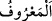

Müslümanın anne-babasına -kâfir bile olsalar- bakması, ihtiyaçlarını karşılaması,
iyilik etmesi, hizmetlerinde ve ziyaretlerinde bulunması dinî bir vazifesidir. Ancak
kendisini inkâra çekmelerinden endişe ederse, bu takdirde onları ziyaret etmeyebilir.
Anne-babası hristiyan iseler onları kiliseye götürmez; çünkü bu günahtır. Ancak
kiliseden alıp eve götürebilir.
Bazıları demişlerdir ki: Buradaki “ma’rûf/iyi geçinmek”, eğer anne-baba Allâh’ı
tanımıyorlarsa, çocuğun dinî bakımdan hatâlı ve yanlış olan şeyleri onlara öğretmesidir.
el-Müfredât’ta şöyle denilir: “
”, akıl ve din ile güzel olduğu bilinen her türlü
fiildir. Münker de akıl ve dinin çirkin gördüğü her iştir. Bu sebeple cömertlikte orta
yolu tutmaya “ma‘rûf” denilmiştir. Çünkü bu hem dinin hem de aklın güzel gördüğü bir
durumdur.
Dinde “bana” tâat konusunda tevhid ve ihlâsla “yönelenlerin” yâni kâmil
mü’minlerin “yoluna uy. Sonunda dönüşünüz” hem senin hem de anne-babanın dönüşü
“ancak banadır. O zaman” dönüş vakti “size yapmış olduklarınızı” her birinizin
yaptığı iyilik ve kötülüğün karşılığını vermek sûretiyle “haber veririm.” O zaman size
yaptığınız şeylerin karşılığını vereceğimi bildiririm.
Âyet aşere-i mübeşşereden Sa‘d b. Ebî Vakkâs (r.a.) hakkında nâzil olmuştur. O
müslüman olduğu zaman annesi, o dininden dönene kadar hiçbir şey yememeye ve
içmemeye yemin etmişti. Rivâyete göre Sa‘d’ın annesi (oğlunun Müslüman olması
sebebiyle) üç gün ekmek yemedi ve su içmedi. Ağzını bir çöp ile açarak su döktüler.
Sa‘d şöyle der: “Eğer onun yetmiş canı olsa ve birer birer kabzetseler; yâni farz edelim
ki yetmiş defa ölse, ben İslâm dininden dönmezdim.” Onun kıssası, pek çok hikmet ve
faydasıyla birlikte Ankebût suresinin baş tarafında geçti.
Bilesin ki tevhidden sonra vâciblerin en mühimi, anne-babaya iyilik etmektir.
Rivâyete göre bir adam gelip: “Yâ Rasûlallah! Annem ihtiyarladı; ona elimle yediriyor,
içiriyor, abdest aldırıyor, omzumda taşıyorum. Aceba hakkını ödemiş olur muyum?”
diye sordu. Efendimiz (a.s.): “Hayır, hatta yüzde birini bile ödemiş olmazsın.”
buyurdu. Adam: “Niçin ey Allâh’ın Rasûlü?” diye sorunca da şöyle cevap verdi:
“Çünkü o sana küçük ve zayıf olduğun bir zamanda hayatta kalasın diye hizmet etti.
Sen ise ona ne zaman ölecek diye hizmet ediyorsun. Fakat sen iyilik yaptığında, Allah
sana aza karşılık çok sevap verecektir.”[83]
Şeyh Sa‘dî der ki:
Bir delikanlı annesinin sözünü dinlememiş,
Onun dertli yüreğini ateşe yakmıştı.
Kadıncağız çaresiz kalınca
Oğlunun beşiğini aldı, önüne koydu:
A muhabbetsiz, a küçüklüğünü unutan çocuk, dedi.
Sen bir zamanlar durmadan ağlayan, âciz bir çocuk değil miydin?
Hani senin yüzünden geceleri uykum tutmazdı.